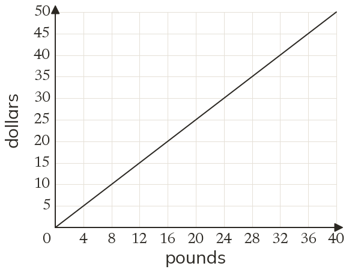
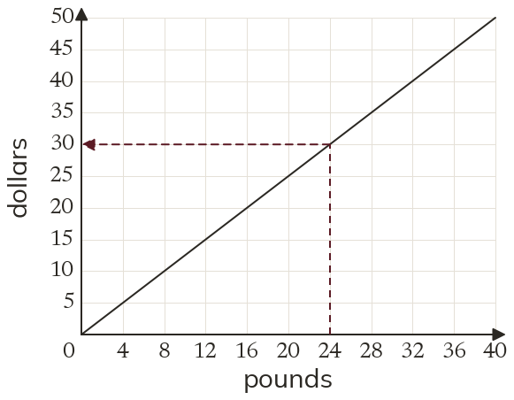
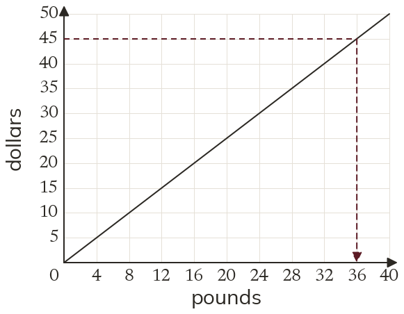

Westonbirt Maths · Direct and Inverse Proportion
Graphs of Proportion
Name: ______________________ Date: ____________
1
The graph converts pounds to dollars. Use it to convert £24 to dollars.
2
Use the same graph to convert $45 to pounds.
3
A conversion graph shows 5 miles as 8 km. Estimate 25 miles in kilometres.
4
The graph shows £40 = $50. Convert $150 to pounds, which is off the graph.
5
The graph uses £1 = $1.25. Check your reading for £24 by calculation.
Ext
A graph converting km to miles is a straight line through (0, 0) and (80, 50). Is it a direct proportion? Find k, and convert 120 km.


